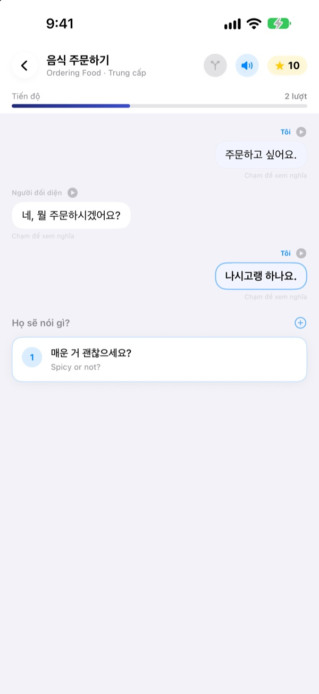
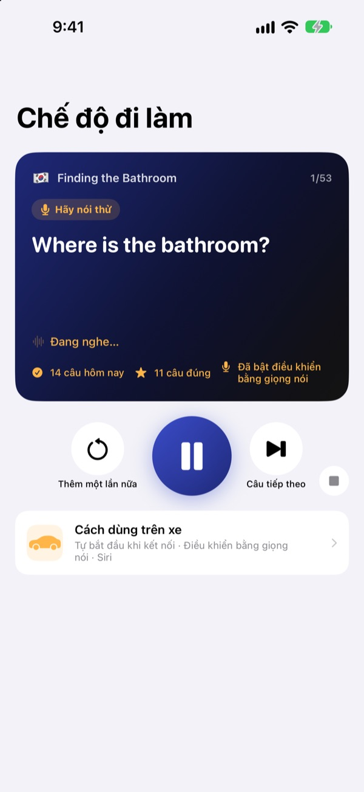
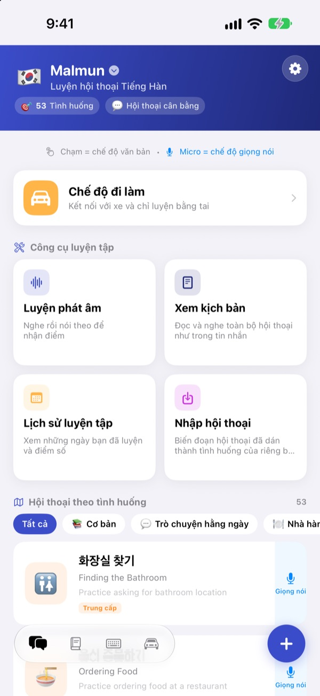
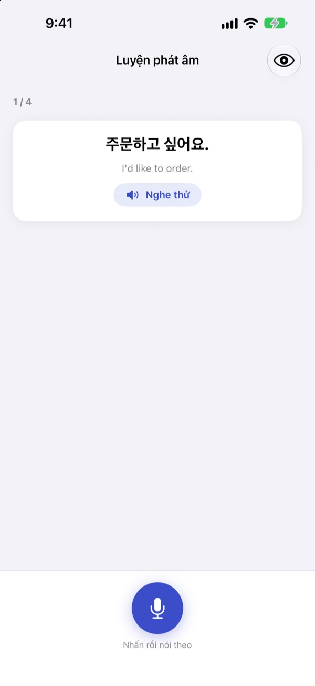

Hết ấp úng.
Hãy mở lời trước.
Malmun là ứng dụng luyện hội thoại, mỗi câu trả lời bạn chọn sẽ đưa cuộc trò chuyện sang một hướng khác. Học tiếng Hàn, Nhật, Trung, Tây Ban Nha hoặc Indonesia, và khi lái xe thì luyện chỉ bằng tai và giọng nói.
Hội thoại phân nhánh, luyện phát âm và từ vựng đều miễn phí.

Tự mình nối tiếp cuộc trò chuyện
Đây là “Chào buổi sáng”, một đoạn hội thoại tiếng Indonesia lấy nguyên từ ứng dụng. Mỗi câu bạn chọn sẽ đưa câu chuyện sang hướng khác.
Thuộc câu rồi mà đến lúc đáp lại thì cứng họng?
Trong sách, hội thoại luôn đi đúng kịch bản. Ngoài đời, người ta hay đáp lại những câu bạn không ngờ tới. Malmun cho bạn đi trước qua mọi nhánh của một cuộc trò chuyện, để dù họ nói gì, câu tiếp theo cũng đã sẵn sàng. Ngay cả quãng đường về nhà cũng thành giờ luyện tập.
Luyện bằng tai khi lái xe
Chế độ đi làm phát qua loa ô tô bằng Bluetooth hoặc CarPlay. Đầu tiên bạn nghe nghĩa, tiếng chuông cho bạn thời gian tự nói, rồi đáp án được phát một lần chậm và một lần ở tốc độ bình thường.
Chuyển câu và nghe lại bằng nút trên vô lăng, hoặc nói next, again, slower khi đến lượt. Ứng dụng tạm dừng khi bản đồ đọc chỉ dẫn.

Đủ mọi tình huống du lịch và thường ngày
Mỗi ngôn ngữ có 53 hội thoại theo tình huống: câu cơ bản, chuyện trò hằng ngày, nhà hàng, đi lại, sân bay, khách sạn, mua sắm, tham quan và khẩn cấp.
Nếu học tiếng Indonesia còn có thêm: 5 kịch bản trò chuyện viết tay, 3 khóa học theo ngày mỗi khóa 6 cảnh kèm thời khóa biểu tuần, và 100 từ cho chuyến công tác.

Kiểm tra xem mình nói đúng chưa
Luyện phát âm cho bạn điểm số và tô màu những từ đã nói đúng cùng những từ bị bỏ sót.
Ở phần xem kịch bản, cả đoạn hội thoại hiện ra như một cuộc chat. Nghe một lượt từ đầu đến cuối, hoặc ẩn nghĩa đi để tự kiểm tra.

Bắt đầu chỉ với ba bước
- 1
Chọn ngôn ngữ
Chạm vào lá cờ trên cùng màn hình chính. Câu và từ vựng được lưu riêng cho từng ngôn ngữ.
- 2
Mở một hội thoại
Chạm vào câu trả lời ở chế độ chữ, hoặc chạm micro và nói: chế độ giọng nói sẽ tìm câu gần nhất.
- 3
Trên xe, dùng Chế độ đi làm
Kết nối iPhone với xe rồi nhấn phát. Không cần nhìn màn hình.
Điều khiển Chế độ đi làm
- Vô lăng: bài tiếp theo
- Câu tiếp theo
- Vô lăng: bài trước
- Nghe lại câu vừa rồi
- Nút phát
- Tạm dừng và tiếp tục
next·skip- Câu tiếp theo
again·repeat- Nghe lại
slower·faster- Đổi tốc độ đọc
next scene- Sang hội thoại tiếp theo
stop·pause- Dừng luyện tập
- Siri: “Bắt đầu luyện đi làm trong Malmun”
- Bắt đầu mà không chạm vào iPhone
Khi ứng dụng dùng tiếng Việt, bạn nói lệnh bằng tiếng Anh. Lệnh chỉ được nghe khi đến lượt bạn, sau tiếng chuông. Câu đang phát hiện trong thông tin phát nhạc trên màn hình xe. CarPlay không có màn hình ứng dụng riêng.
Gần như mọi thứ đều miễn phí. Malmun Pro mở phần còn lại.
Miễn phí
- Trò chuyện phân nhánh và khóa học theo ngày (tiếng Indonesia)
- Hội thoại theo tình huống: câu cơ bản và chuyện trò hằng ngày
- Chế độ đi làm, 3 cảnh mỗi ngày
- Phát âm, kịch bản, nhập hội thoại, lịch sử luyện tập
- Câu của tôi, thẻ từ vựng, bàn phím câu
- Chia sẻ kịch bản với bạn bè, tạo kịch bản bằng AI
Malmun Pro
- Toàn bộ hội thoại theo tình huống: nhà hàng, đi lại, sân bay, khách sạn, mua sắm, tham quan, khẩn cấp
- Chế độ đi làm không giới hạn
- Áp dụng cho mọi ngôn ngữ
Gói năm hoặc mua một lần dùng trọn đời
Xem giá trong ứng dụng và trên App Store. Gói năm tự động gia hạn trừ khi bạn hủy ít nhất 24 giờ trước khi hết kỳ.
Câu hỏi thường gặp
Tôi có thể học những ngôn ngữ nào?
Tiếng Hàn, Nhật, Trung, Tây Ban Nha và Indonesia. Nút bấm và menu là tiếng Việt, nhưng nghĩa của câu và lệnh giọng nói là tiếng Anh. Vì vậy bản thân tiếng Anh không có trong danh sách.
Dùng trên ô tô thế nào?
Kết nối iPhone với xe qua Bluetooth hoặc CarPlay, mở Chế độ đi làm và nhấn phát. Âm thanh phát qua loa xe, câu đang phát hiện ở mục Đang phát. Bạn cũng có thể nói với Siri “Bắt đầu luyện đi làm trong Malmun”, hoặc tạo một lần tự động hóa trong ứng dụng Phím tắt để bắt đầu ngay khi CarPlay (hoặc Bluetooth của xe) kết nối.
Micro có nghe liên tục không?
Không. Micro chỉ nghe khi đến lượt bạn sau tiếng chuông, qua micro của iPhone, và những gì nghe được chỉ xử lý trên thiết bị.
Phát âm của tôi không được nhận ra.
Nhận dạng giọng nói chạy bằng ngôn ngữ bạn đang học. Hãy thử ở nơi yên tĩnh hơn và kiểm tra rằng nhận dạng giọng nói của ngôn ngữ đó đã được tải về thiết bị.
Thêm bàn phím bằng cách nào?
Vào Cài đặt ▸ Cài đặt chung ▸ Bàn phím ▸ Bàn phím ▸ Thêm bàn phím mới và chọn bàn phím Malmun. Khi gõ, chạm nút quả địa cầu để chuyển. Không cần cho phép truy cập đầy đủ. Muốn hiện ít câu hơn, chạm biểu tượng bàn phím ở góc dưới bên phải màn hình chính ▸ Quản lý bàn phím.
Tôi không thấy kịch bản bạn tôi đã chia sẻ.
Chia sẻ hoạt động qua iCloud, nên cả hai cần đăng nhập iCloud. Nếu vẫn không thấy, hãy đóng hẳn ứng dụng rồi mở lại.
Cần gì để tạo kịch bản bằng AI?
Nhập khóa API Anthropic của riêng bạn vào ứng dụng và viết một chủ đề, một hội thoại mới sẽ được tạo. Mọi thứ khác vẫn dùng được khi không có khóa.
Hủy gói hoặc xin hoàn tiền thế nào?
Thanh toán do Apple xử lý. Hủy trong Cài đặt iPhone ▸ Tài khoản Apple ▸ Đăng ký ▸ Malmun. Muốn hoàn tiền, hãy gửi yêu cầu cho Apple tại reportaproblem.apple.com.
Đổi iPhone mới thì mất Pro.
Đăng nhập cùng Tài khoản Apple, rồi trong Malmun chạm Cài đặt ▸ Malmun Pro ▸ Khôi phục giao dịch mua.
Tiến độ học của tôi được lưu ở đâu?
Không cần tài khoản. Dữ liệu nằm trên thiết bị và trong iCloud của chính bạn. Không quảng cáo, không theo dõi, chỉ gửi thống kê sử dụng ẩn danh và báo cáo lỗi. Bạn cũng có thể báo lỗi hoặc góp ý trên GitHub Issues (github.com/M1zz/IndonesianSmallTalk/issues).
Có câu hỏi hay góp ý? Gửi về leeo@kakao.com, dùng Cài đặt ▸ Gửi phản hồi trong ứng dụng, hoặc nhắn Instagram @lee25_ios.